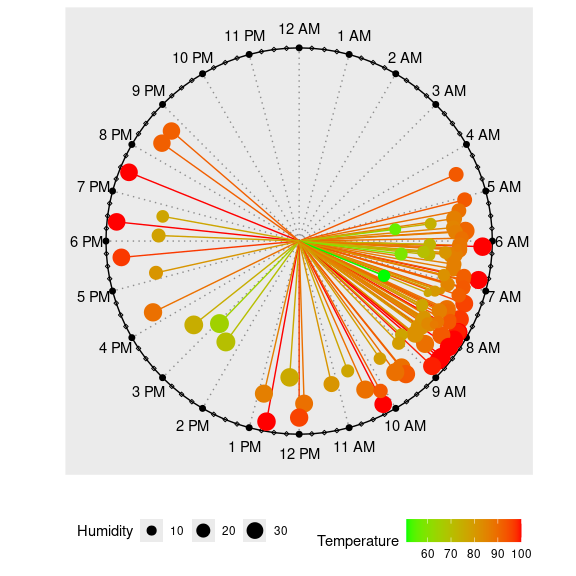
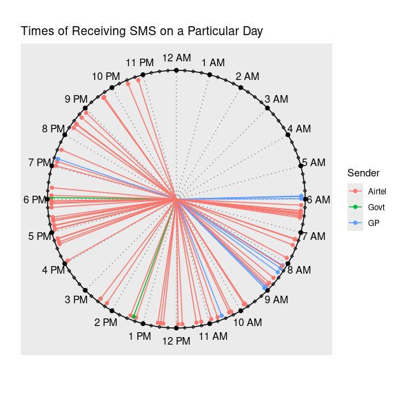

A novel visualization technique for plotting timestamped events on a 24-hour circular clock face. The clockplot package helps you uncover daily patterns, event clusters, and gaps in your temporal data.
The approach generalizes to other cycles—like weeks and months—making it an essential tool for visualizing rhythms and planning events across any timeframe.
Installation
You can install the latest version from CRAN with:
install.packages("clockplot")You can install the development version of clockplot from GitHub with:
# install.packages("pak")
pak::pak("mahmudstat/clockplot")Usage
Click here to visit the repository and follow the website (mentioned on the About section) to see all the available functions.
Applications
Below we mention some relevant applications.
US Accidents plot
The data is taken from Kaggle and a small part (100 rows) extracted. To see the modified data, visit this link.
library(clockplot)
acdt <- read.csv("https://raw.githubusercontent.com/mahmudstat/open-analysis/main/data/usacc.csv")
clock_chart_qnt(acdt, time = Time, len = Humidity..., Col = Temperature.F.) +
ggplot2::labs(size = "Humidity", color = "Temperature")
This allows us to observe when the accidents occurred and how temperature and humidity may be associated with them.
A Simpler Chart
We have a small data of times of messages received throughout a particular day, along with sender of the messages and their types. Let us the pattern of messages by senders.

Other Charts
Generally, there is cyclic_chart(), allowing to plot daily, weekly, or monthly values or agenda on a circular plot. There are some specific functions as well, relating to day, week etc.
Additional Components
The charts produce ggplot objects, so you can make use of many of the functions of the ggplot2 package. You can use the labs function, for example, to add title, subtitle, caption etc. Some examples are shown in the next segment.
You can also add legend or change its position by using the code theme(legend.position = "right"); the accepted positions are top, bottom, left, and right.